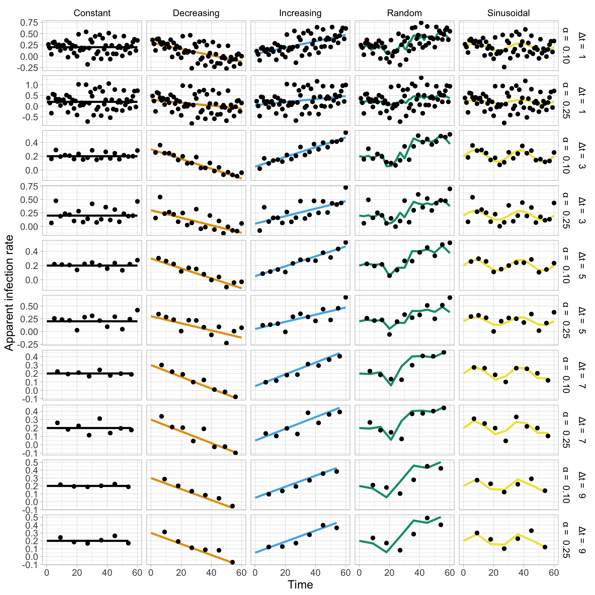

Packages and settings
Our analyses in R depend on a few functions available in five R packages and are based on the tidyverse tools and programming style.
library(tidyverse)
library(deSolve)
library(ggthemes)
library(cowplot)
library(viridis)
theme_set(theme_light()) # sets theme_light() as global
Epidemic simulations
A function was created to facilitate the production of synthetic epidemic data based on a few arguments that should be provided by the user such as epidemic duration, time interval, apparent infection rate, initial inoculum and uncertainty in the measures (standard deviation).
logi_fun <- function(t, y, par) {
y <- y[1]
r <- par$r
dy = y*r*(1-y)
return(list(c(dy)))
}
logistic = function(N=10, dt=1, y0=0.01, r, sd=1, inf = 1){
time <- seq(0,N, by=dt)
w = numeric(length(time))
y <- numeric(length(time))
y[1] = y0
aa <- -1
bb <- 1
for (k in 1:(length(time) - 1)) {
# Constant
if(inf == 1){r[k+1] = r[k]}
# Increasing
if(inf == 2){r[k+1] = r[k]+0.0035}
# Decreasing
if(inf == 3){r[k+1] = r[k]-0.0035}
# Sinusoidal
if(inf == 4){r[k+1] = r[k]+ ((pi * cos((pi * (k - 1)) / 30)) / 360)}
# Random
rr <- aa + (bb - aa) * runif(1)
if(inf == 5){r[k+1] = r[k] + 0.05 * rr}
InitCond <- c(y[k])
steps = seq(time[k],time[k+1], by=dt)
parms <- list(r=r[k])
ode_logi <- ode(InitCond, steps, logi_fun, parms)
y[k + 1] = last(ode_logi[,2])
# y[k + 1] <- dt * (r[k] * y[k] * (1 - y[k])) + y[k]
}
for(i in 1:length(time)){
w[i] = rnorm(1,y[i],sd = sd*y[i]*(1-y[i]))
if(w[i] > 1){
w[i]=1
}
if(w [i] < 0){
w[i]=0
}
}
return(data.frame(time, Intensity = y, Randon_intensity = w, inf_rate = r))
}
PF-derived rate
A function was prepared to run the Particle Filter for estimating the ry parameter.
SIR_filter = function(model, Nparti, measures, time, guess_r, sd_meas, sd_par, sd_model, dt= 0.5){
realSmeas <- measures
# Initial guess for the estimation. Here we set as the first value of the synthetic measures vector
N = length(realSmeas)
y <- numeric(N)
r <- numeric(N)
dt = dt
Xinit <- realSmeas[1]
S <- Xinit
r[1] = guess_r
time = time
# particle number
Nparti <- Nparti
Nparti1 <- (1 / Nparti)
# Variables' and model's error
Smeas <- mean(realSmeas)
stdmeas <- 0.25 * Smeas*(1-Smeas)
# Synthetic data error
stdmodel <- 0.005 * S
# Model error
stdmodeldif <- sd_par
# "parameter"" error
# Creating the weights' vector
wparti <- numeric(Nparti)
# Creating the others vectors for the SIR-PF algorithm
sinti <- numeric(N)
sinti[1] <- r[1]
Snew <- numeric(N)
Snew[1] <- S
xestsir <- numeric(N)
xestsir[1] <- S
loop1 <- c(1:(length(time) - 1))
loop2 <- c(1:Nparti)
xpartires <- numeric(Nparti)
sintires <- numeric(Nparti)
wpartires <- numeric(Nparti)
xpartinew <- numeric(Nparti)
sintinew <- numeric(Nparti)
stdsint <- numeric(N)
stdsir <- numeric(N)
aa <- -1
bb <- 1
for (k in loop1) { # loop to every time point
for (l in loop2) { # loop to create the particles
# Rondomic particle for "intensity" :
Sold <- Snew[k] + rnorm(1)*stdmodel
# Rondomic particle for "parameter":
rr <- aa + (bb - aa) * runif(1)
sintold <- sinti[k] + rr * stdmodeldif
# Solving the direct problem for every particle
InitCond <- c(Sold)
steps <- seq(time[k], time[k + 1], by = dt)
parms <- list(r = sintold)
# Logistic
if(model == 1){
ode_logi <- ode(InitCond, steps, logi_fun, parms)
y[k + 1] = last(ode_logi[,2])
}
# gompertz
if(model == 2) {
ode_gompi =ode(InitCond, steps, gompi_fun, parms)
y[k + 1] = last(ode_gompi[,2])
}
if(model == 3) {
ode_mono =ode(InitCond, steps, mono_fun, parms)
y[k + 1] = last(ode_mono[,2])
}
xpartinew[l] <- y[k + 1]
sintinew[l] <- sintold
# Calculating the weigths
wparti[l] <- exp(-((xpartinew[l] - realSmeas[k+1]) / stdmeas)^2)
}
# Setting the weigths between 0 and 1
wtotal <- sum(wparti)
wpartin <- numeric(Nparti)
wpartin <- wparti / wtotal
# Resampling
cresa <- numeric(Nparti)
uresa <- numeric(Nparti)
cresa[1] <- wpartin[1]
for (i in 2:Nparti) {
cresa[i] <- cresa[i - 1] + wpartin[i]
}
iresa <- 1
uresa[1] <- runif(1) * Nparti1
for (j in 1:Nparti) {
uresa[j] <- uresa[1] + Nparti1 * (j - 1)
while (uresa[j] > cresa[iresa]) {
iresa <- iresa + 1
}
xpartires[j] <- xpartinew[iresa]
sintires[j] <- sintinew[iresa]
wpartires[j] <- Nparti1
}
Snew[k + 1] <- mean(xpartires)
sinti[k + 1] <- mean(sintires)
stdsint[k + 1] <- sd(sintires)
xestsir[k + 1] <- mean(xpartires)
stdsir[k + 1] <- sd(xpartires)
xpartiold <- xpartires
# Error atualization
stdmodeldif <- sd_par
stdmodel <- sd_model * Snew[k + 1]
stdmeas <- sd_meas * realSmeas[k + 1]*(1-realSmeas[k + 1])
}
lbdsiro <- sinti - 2.576 * stdsint
ubdsiro <- sinti + 2.576 * stdsint
lbdsir <- xestsir - 2.576 * stdsir
ubdsir <- xestsir + 2.576 * stdsir
final <- data.frame(time, realSmeas, xestsir, lbdsir, ubdsir, sinti, lbdsiro, ubdsiro)
return(final)
}
Simulation of time-varying r
We need to set the initial values for simulating ry of various temporal patterns.
logi_setup <- matrix(c(
"Constant", 0.2,
"Increasing", 0.05,
"Decreasing", 0.3,
"Sinusoidal", 0.2,
"Random", 0.2
),
nrow = 5,
ncol = ,
byrow = TRUE
)
We will now run the Particle Filter to obtain the estimates of both the measures and the parameters for each type of infection rate, time interval and noise. For such, we will use a for-loop approach to generate a dataframe. Noise is represented by j, time interval by k and ry pattern by i.
noise <- c(0.1, 0.25)
logistic_all3 <- data.frame()
for (j in 1:2) {
logistic_all2 <- data.frame()
for (k in seq(1, 10, by = 2)) {
logistic_all <- data.frame()
for (i in 1:5) {
set.seed(5)
data <- logistic(N = 60, dt = 0.5, y0 = 0.001, r = as.numeric(logi_setup[i, 2]), sd = noise[j], inf = i)
data <- data %>%
filter(time %in% c(seq(0, 60, by = k)))
data_logi <- data.frame(
infection_type = as.factor(logi_setup[i, 1]),
SIR_filter(
model = 1,
guess_r = as.numeric(logi_setup[i, 2]),
Nparti = 1000,
measures = data$Randon_intensity,
time = data$time,
sd_meas = 0.25,
sd_par = 0.15,
sd_model = 0.005
),
y = data$Intensity,
inf_rate = data$inf_rate
)
logistic_all <- logistic_all %>%
bind_rows(data_logi)
}
logistic_all <- logistic_all %>%
mutate(time_interval = k)
logistic_all2 <- logistic_all2 %>%
bind_rows(logistic_all)
}
logistic_all2 <- logistic_all2 %>%
mutate(noise = noise[j])
logistic_all3 <- logistic_all3 %>%
bind_rows(logistic_all2)
}
Visualizing the DPCs
Now that we produced the DPC data we can visualize each curve for the combination ry pattern, noise in the measure and time interval. But first we need to correct names of levels of factors which need special characters like alpha and delta.
logistic_all3 <- logistic_all3 %>%
mutate(noise2 = noise) %>%
mutate(noise = case_when(
noise == 0.10 ~ "\u03b1 = 0.10",
noise == 0.25 ~ "\u03b1 = 0.25"
)) %>%
mutate(time_interval2 = time_interval) %>%
mutate(time_interval = case_when(
time_interval == 1 ~ "\u0394t = 1",
time_interval == 3 ~ "\u0394t = 3",
time_interval == 5 ~ "\u0394t = 5",
time_interval == 7 ~ "\u0394t = 7",
time_interval == 9 ~ "\u0394t = 9"
))
head(logistic_all3)
We can then proceed to produce a panel of plots for each of the 50 DPCs.
logistic_all3 %>%
ggplot() +
geom_line(aes(time, realSmeas, color = infection_type),
size = 1.2
) +
facet_grid(time_interval + noise ~ infection_type) +
scale_fill_manual(values = "gray") +
scale_color_colorblind() +
labs(
x = "Time",
y = "Disease intensity"
) +
theme(
legend.position = "none", text = element_text(size = 16),
strip.text = element_text(color = "black"),
strip.background = element_rect(fill = "white")
) +
scale_y_continuous(breaks = seq(0, 1, 0.25))

ggsave("figs/logistic_noised.png", dpi = 300, height = 12, width = 8)
Now a similar panel depicting the simulated ry values (solid colored line) and the respective point-estimate (and respective 95% CI)using the particle filter method.
logistic_all3 %>%
ggplot() +
geom_ribbon(aes(time, ymin = (ubdsiro), ymax = (lbdsiro), fill = "Ic 99%"), alpha = 0.5, stat = "identity") +
geom_line(aes(time, inf_rate, color = infection_type),
size = 1.2
) +
geom_point(aes(time, sinti),
size = 2, alpha = 1
) +
facet_grid(time_interval + noise ~ infection_type, scales = "free_y") +
scale_fill_manual(values = "gray") +
scale_color_colorblind() +
labs(
x = "Time",
y = "Apparent infection rate"
) +
theme(
legend.position = "none", text = element_text(size = 14),
strip.text = element_text(color = "black"),
strip.background = element_rect(fill = "white")
) +
scale_y_continuous(breaks = seq(-2, 2, 0.2))

ggsave("figs/logistic_air.png", dpi = 300, height = 12, width = 8)
Besides the ry parameter estimation, the particle filter also estimates the measures y at each time point. Let’s have a look at these estimates (and respective 95%CI) together with the synthetic measures (the solid lines).
logistic_all3 %>%
ggplot() +
geom_ribbon(aes(time, ymin = (ubdsir), ymax = (lbdsir), fill = "Ic 99%"), alpha = 0.5, stat = "identity") +
geom_line(aes(time, y, color = infection_type),
size = 1.2
) +
geom_point(aes(time, xestsir),
size = 1.5, alpha = 0.7
) +
facet_grid(time_interval + noise ~ infection_type) +
scale_fill_manual(values = "gray") +
scale_color_colorblind() +
labs(
x = "Time",
y = "Disease intensity"
) +
theme(
legend.position = "none", text = element_text(size = 16),
strip.text = element_text(color = "black"),
strip.background = element_rect(fill = "white")
) +
scale_y_continuous(breaks = seq(0, 1, 0.25))

ggsave("figs/logistic_curve.png", dpi = 300, height = 12, width = 8)
Estimation error
The accuracy of the estimates of ry, or how close they were to the simulated ry was evaluated based on the mean squared error statistic. The code below will produce a dataframe with the respective RMSE for each epidemics.
RMSE_data <- logistic_all3 %>%
group_by(infection_type, time_interval2, noise) %>%
mutate(
rmsi = (inf_rate - sinti)^2,
maei = abs(inf_rate - sinti)
) %>%
summarise(RMS = sqrt((1 / (length(inf_rate))) * sum(rmsi, na.rm = T))) %>%
mutate(model = "Logistic")
acuracy_logi <- RMSE_data
head(acuracy_logi)
Logit-derived rate
The following equation is commonly used to obtain ry between two times, given the two measures are known.
\[ r_{i+1} = \frac {[ln(\frac {y_{i+1}}{1-y_{i+1}}) -ln(\frac {y_{i}}{1-y_{i}}) ]}{t_{i+1} - t_{i}} \]
We will calculate them all for each curve the same way we did for the PF-estimated parameters and then visualize.
calc_r_log <- logistic_all3 %>%
group_by(infection_type, time_interval, noise) %>%
mutate(r_calc = (log(realSmeas / (1 - realSmeas)) - log((lag(realSmeas, 1) / (1 - (lag(realSmeas, 1)))))) / (time - lag(time, 1))) %>%
mutate(model = "Logistic")
calculated_r <- calc_r_log
head(calculated_r %>%
ungroup() %>%
select(infection_type, time, noise, time_interval2, r_calc))
calculated_r %>%
ggplot() +
geom_line(aes(time, inf_rate, color = infection_type),
size = 1.2
) +
geom_point(aes(time, r_calc),
size = 2,
alpha = 1
) +
facet_grid(time_interval + noise ~ infection_type, scales = "free_y") +
scale_fill_viridis() +
scale_color_colorblind() +
labs(
x = "Time",
y = "Apparent infection rate"
) +
guides(color = guide_legend("none")) +
theme(
text = element_text(size = 14), legend.position = "none",
strip.text = element_text(color = "black"),
strip.background = element_rect(fill = "white")
)
## Warning: Removed 50 rows containing missing values (geom_point).

ggsave("figs/r_calc_logi.png", dpi = 300, height = 12, width = 8)
## Warning: Removed 50 rows containing missing values (geom_point).
Error
acuracy_calc <- calculated_r %>%
filter(r_calc != is.na(r_calc)) %>%
group_by(infection_type, time_interval2, noise) %>%
mutate(
rmsi = (inf_rate - r_calc)^2,
maei = abs(inf_rate - r_calc)
) %>%
summarise(RMS = sqrt((1 / (length(inf_rate))) * sum(rmsi, na.rm = T)))
head(acuracy_calc)
JSBBbmFseXNpcwoKIyMgUGFja2FnZXMgYW5kIHNldHRpbmdzCgpPdXIgYW5hbHlzZXMgaW4gUiBkZXBlbmQgb24gYSBmZXcgZnVuY3Rpb25zIGF2YWlsYWJsZSBpbiBmaXZlIFIgcGFja2FnZXMgYW5kIGFyZSBiYXNlZCBvbiB0aGUgdGlkeXZlcnNlIHRvb2xzIGFuZCBwcm9ncmFtbWluZyBzdHlsZS4gCgpgYGB7ciBtZXNzYWdlPUZBTFNFLCB3YXJuaW5nPUZBTFNFfQpsaWJyYXJ5KHRpZHl2ZXJzZSkKbGlicmFyeShkZVNvbHZlKQpsaWJyYXJ5KGdndGhlbWVzKQpsaWJyYXJ5KGNvd3Bsb3QpCmxpYnJhcnkodmlyaWRpcykKdGhlbWVfc2V0KHRoZW1lX2xpZ2h0KCkpICMgc2V0cyB0aGVtZV9saWdodCgpIGFzIGdsb2JhbApgYGAKCgojIyBFcGlkZW1pYyBzaW11bGF0aW9ucwoKQSBmdW5jdGlvbiB3YXMgY3JlYXRlZCB0byBmYWNpbGl0YXRlIHRoZSBwcm9kdWN0aW9uIG9mIHN5bnRoZXRpYyBlcGlkZW1pYyBkYXRhIGJhc2VkIG9uIGEgZmV3IGFyZ3VtZW50cyB0aGF0IHNob3VsZCBiZSBwcm92aWRlZCBieSB0aGUgdXNlciBzdWNoIGFzIGVwaWRlbWljIGR1cmF0aW9uLCB0aW1lIGludGVydmFsLCBhcHBhcmVudCBpbmZlY3Rpb24gcmF0ZSwgaW5pdGlhbCBpbm9jdWx1bSBhbmQgdW5jZXJ0YWludHkgaW4gdGhlIG1lYXN1cmVzIChzdGFuZGFyZCBkZXZpYXRpb24pLgoKYGBge3J9CmxvZ2lfZnVuIDwtIGZ1bmN0aW9uKHQsIHksIHBhcikgewogIAogIHkgPC0geVsxXQogIHIgPC0gcGFyJHIKICBkeSA9IHkqciooMS15KQogIHJldHVybihsaXN0KGMoZHkpKSkKfQoKbG9naXN0aWMgPSBmdW5jdGlvbihOPTEwLCBkdD0xLCB5MD0wLjAxLCByLCBzZD0xLCBpbmYgPSAxKXsKICAKICB0aW1lIDwtIHNlcSgwLE4sIGJ5PWR0KQogIHcgPSBudW1lcmljKGxlbmd0aCh0aW1lKSkKICB5IDwtIG51bWVyaWMobGVuZ3RoKHRpbWUpKQogIHlbMV0gPSB5MAogIGFhIDwtIC0xCiAgYmIgPC0gMQogIGZvciAoayBpbiAxOihsZW5ndGgodGltZSkgLSAxKSkgewogICAgIyBDb25zdGFudAogICAgaWYoaW5mID09IDEpe3JbaysxXSA9IHJba119CiAgICAKICAgICMgSW5jcmVhc2luZwogICAgaWYoaW5mID09IDIpe3JbaysxXSA9IHJba10rMC4wMDM1fQogICAgCiAgICAjIERlY3JlYXNpbmcKICAgIGlmKGluZiA9PSAzKXtyW2srMV0gPSByW2tdLTAuMDAzNX0KICAgIAogICAgIyBTaW51c29pZGFsCiAgICBpZihpbmYgPT0gNCl7cltrKzFdID0gcltrXSsgKChwaSAqIGNvcygocGkgKiAoayAtIDEpKSAvIDMwKSkgLyAzNjApfQogICAgCiAgICAjIFJhbmRvbQogICAgcnIgPC0gYWEgKyAoYmIgLSBhYSkgKiBydW5pZigxKQogICAgaWYoaW5mID09IDUpe3JbaysxXSA9IHJba10gKyAwLjA1ICogcnJ9CiAgICAKICAgIEluaXRDb25kIDwtIGMoeVtrXSkKICAgIHN0ZXBzID0gc2VxKHRpbWVba10sdGltZVtrKzFdLCBieT1kdCkKICAgIHBhcm1zIDwtIGxpc3Qocj1yW2tdKQogICAgb2RlX2xvZ2kgPC0gb2RlKEluaXRDb25kLCBzdGVwcywgbG9naV9mdW4sIHBhcm1zKSAgCiAgICB5W2sgKyAxXSA9IGxhc3Qob2RlX2xvZ2lbLDJdKQogICMgIHlbayArIDFdIDwtIGR0ICogKHJba10gKiB5W2tdICogKDEgLSB5W2tdKSkgKyB5W2tdCiAgfQogIAogIAogIGZvcihpIGluIDE6bGVuZ3RoKHRpbWUpKXsKICAgIAogICAgd1tpXSA9IHJub3JtKDEseVtpXSxzZCA9IHNkKnlbaV0qKDEteVtpXSkpCiAgICAKICAgIGlmKHdbaV0gPiAxKXsKICAgICAgd1tpXT0xCiAgICB9CiAgICBpZih3IFtpXSA8IDApewogICAgICB3W2ldPTAKICAgIH0KICB9CiAgcmV0dXJuKGRhdGEuZnJhbWUodGltZSwgSW50ZW5zaXR5ID0geSwgUmFuZG9uX2ludGVuc2l0eSA9IHcsIGluZl9yYXRlID0gcikpCn0KYGBgCgojIyBQRi1kZXJpdmVkIHJhdGUgCgpBIGZ1bmN0aW9uIHdhcyBwcmVwYXJlZCB0byBydW4gdGhlIFBhcnRpY2xlIEZpbHRlciBmb3IgZXN0aW1hdGluZyB0aGUgX3JfPHN1Yj55PC9zdWI+IHBhcmFtZXRlci4KCgpgYGB7cn0KClNJUl9maWx0ZXIgPSBmdW5jdGlvbihtb2RlbCwgTnBhcnRpLCBtZWFzdXJlcywgdGltZSwgIGd1ZXNzX3IsIHNkX21lYXMsIHNkX3Bhciwgc2RfbW9kZWwsIGR0PSAwLjUpewogIHJlYWxTbWVhcyA8LSBtZWFzdXJlcwoKIyBJbml0aWFsIGd1ZXNzIGZvciB0aGUgZXN0aW1hdGlvbi4gSGVyZSB3ZSBzZXQgYXMgdGhlIGZpcnN0IHZhbHVlIG9mIHRoZSBzeW50aGV0aWMgbWVhc3VyZXMgdmVjdG9yCiAgTiA9IGxlbmd0aChyZWFsU21lYXMpCiAgeSA8LSBudW1lcmljKE4pCiAgciA8LSBudW1lcmljKE4pCiAgZHQgPSBkdAogIFhpbml0IDwtIHJlYWxTbWVhc1sxXQogIFMgPC0gWGluaXQKICByWzFdID0gZ3Vlc3NfcgogIHRpbWUgPSB0aW1lCiAgIyBwYXJ0aWNsZSBudW1iZXIKICAKICBOcGFydGkgPC0gTnBhcnRpCiAgTnBhcnRpMSA8LSAoMSAvIE5wYXJ0aSkKICAKICAjIFZhcmlhYmxlcycgYW5kIG1vZGVsJ3MgZXJyb3IKICAKICAKICBTbWVhcyA8LSBtZWFuKHJlYWxTbWVhcykKICBzdGRtZWFzIDwtIDAuMjUgKiBTbWVhcyooMS1TbWVhcykKICAjIFN5bnRoZXRpYyBkYXRhIGVycm9yCiAgc3RkbW9kZWwgPC0gMC4wMDUgKiBTCiAgIyBNb2RlbCBlcnJvcgogIHN0ZG1vZGVsZGlmIDwtIHNkX3BhciAKICAjICJwYXJhbWV0ZXIiIiBlcnJvcgogIAogIAogICMgQ3JlYXRpbmcgdGhlIHdlaWdodHMnIHZlY3RvcgogIAogIHdwYXJ0aSA8LSBudW1lcmljKE5wYXJ0aSkKICAKICAKICAjIENyZWF0aW5nIHRoZSBvdGhlcnMgdmVjdG9ycyBmb3IgdGhlIFNJUi1QRiBhbGdvcml0aG0KICAKICBzaW50aSA8LSBudW1lcmljKE4pCiAgc2ludGlbMV0gPC0gclsxXSAKICBTbmV3IDwtIG51bWVyaWMoTikKICBTbmV3WzFdIDwtIFMKICB4ZXN0c2lyIDwtIG51bWVyaWMoTikKICB4ZXN0c2lyWzFdIDwtIFMKICBsb29wMSA8LSBjKDE6KGxlbmd0aCh0aW1lKSAtIDEpKQogIGxvb3AyIDwtIGMoMTpOcGFydGkpCiAgCiAgeHBhcnRpcmVzIDwtIG51bWVyaWMoTnBhcnRpKQogIHNpbnRpcmVzIDwtIG51bWVyaWMoTnBhcnRpKQogIHdwYXJ0aXJlcyA8LSBudW1lcmljKE5wYXJ0aSkKICB4cGFydGluZXcgPC0gbnVtZXJpYyhOcGFydGkpCiAgc2ludGluZXcgPC0gbnVtZXJpYyhOcGFydGkpCiAgc3Rkc2ludCA8LSBudW1lcmljKE4pCiAgc3Rkc2lyIDwtIG51bWVyaWMoTikKICAKICBhYSA8LSAtMQogIGJiIDwtIDEKICBmb3IgKGsgaW4gbG9vcDEpIHsgIyBsb29wIHRvIGV2ZXJ5IHRpbWUgcG9pbnQKICAgIAogICAgZm9yIChsIGluIGxvb3AyKSB7ICMgbG9vcCB0byBjcmVhdGUgdGhlIHBhcnRpY2xlcwogICAgICAKICAgICAgIyBSb25kb21pYyBwYXJ0aWNsZSBmb3IgImludGVuc2l0eSIgOgogICAgICAKICAgICAgU29sZCA8LSBTbmV3W2tdICsgcm5vcm0oMSkqc3RkbW9kZWwKICAgICAgCiAgICAgICMgUm9uZG9taWMgcGFydGljbGUgZm9yICJwYXJhbWV0ZXIiOgogICAgICAKICAgICAgcnIgPC0gYWEgKyAoYmIgLSBhYSkgKiBydW5pZigxKQogICAgICBzaW50b2xkIDwtIHNpbnRpW2tdICsgcnIgKiBzdGRtb2RlbGRpZiAKICAgICAgCiAgICAgICMgU29sdmluZyB0aGUgZGlyZWN0IHByb2JsZW0gZm9yIGV2ZXJ5IHBhcnRpY2xlCiAgICAgIEluaXRDb25kIDwtIGMoU29sZCkKICAgICAgc3RlcHMgPC0gc2VxKHRpbWVba10sIHRpbWVbayArIDFdLCBieSA9IGR0KQogICAgICBwYXJtcyA8LSBsaXN0KHIgPSBzaW50b2xkKQogICAgICAgIAogICAgICAKICAgICAgICAgIyBMb2dpc3RpYwogICAgICAgICBpZihtb2RlbCA9PSAxKXsKICAgICAgICAgICBvZGVfbG9naSA8LSBvZGUoSW5pdENvbmQsIHN0ZXBzLCBsb2dpX2Z1biwgcGFybXMpICAKICAgICAgICAgICB5W2sgKyAxXSA9IGxhc3Qob2RlX2xvZ2lbLDJdKQogICAgICAgICAgIH0gICAgIAogICAgICAgICAjIGdvbXBlcnR6CiAgICAgICAgIGlmKG1vZGVsID09IDIpIHsKICAgICAgICAgICBvZGVfZ29tcGkgPW9kZShJbml0Q29uZCwgc3RlcHMsIGdvbXBpX2Z1biwgcGFybXMpICAKICAgICAgICAgICB5W2sgKyAxXSA9IGxhc3Qob2RlX2dvbXBpWywyXSkgCiAgICAgICAgIH0KICAgICAgIAogICAgICBpZihtb2RlbCA9PSAzKSB7CiAgICAgICAgb2RlX21vbm8gPW9kZShJbml0Q29uZCwgc3RlcHMsIG1vbm9fZnVuLCBwYXJtcykgIAogICAgICAgIHlbayArIDFdID0gbGFzdChvZGVfbW9ub1ssMl0pIAogICAgICB9CiAgICAgIAoKICAgICAgIHhwYXJ0aW5ld1tsXSA8LSB5W2sgKyAxXQogICAgICAKICAgICAgIHNpbnRpbmV3W2xdIDwtIHNpbnRvbGQKICAgICAgCiAgICAgICMgQ2FsY3VsYXRpbmcgdGhlIHdlaWd0aHMKICAgICAgCiAgICAgIHdwYXJ0aVtsXSA8LSBleHAoLSgoeHBhcnRpbmV3W2xdIC0gcmVhbFNtZWFzW2srMV0pIC8gc3RkbWVhcyleMikKICAgIH0KICAgIAogICAgIyBTZXR0aW5nIHRoZSB3ZWlndGhzIGJldHdlZW4gMCBhbmQgMQogICAgCiAgICB3dG90YWwgPC0gc3VtKHdwYXJ0aSkKICAgIAogICAgd3BhcnRpbiA8LSBudW1lcmljKE5wYXJ0aSkKICAgIHdwYXJ0aW4gPC0gd3BhcnRpIC8gd3RvdGFsCiAgICAKICAgIAogICAgIyBSZXNhbXBsaW5nCiAgICAKICAgIGNyZXNhIDwtIG51bWVyaWMoTnBhcnRpKQogICAgdXJlc2EgPC0gbnVtZXJpYyhOcGFydGkpCiAgICBjcmVzYVsxXSA8LSB3cGFydGluWzFdCiAgICAKICAgIGZvciAoaSBpbiAyOk5wYXJ0aSkgewogICAgICBjcmVzYVtpXSA8LSBjcmVzYVtpIC0gMV0gKyB3cGFydGluW2ldCiAgICB9CiAgICBpcmVzYSA8LSAxCiAgICB1cmVzYVsxXSA8LSBydW5pZigxKSAqIE5wYXJ0aTEKICAgIAogICAgZm9yIChqIGluIDE6TnBhcnRpKSB7CiAgICAgIHVyZXNhW2pdIDwtIHVyZXNhWzFdICsgTnBhcnRpMSAqIChqIC0gMSkKICAgICAgCiAgICAgIHdoaWxlICh1cmVzYVtqXSA+IGNyZXNhW2lyZXNhXSkgewogICAgICAgIGlyZXNhIDwtIGlyZXNhICsgMQogICAgICB9CiAgICAgIAogICAgICB4cGFydGlyZXNbal0gPC0geHBhcnRpbmV3W2lyZXNhXQogICAgICBzaW50aXJlc1tqXSA8LSBzaW50aW5ld1tpcmVzYV0KICAgICAgd3BhcnRpcmVzW2pdIDwtIE5wYXJ0aTEKICAgIH0KICAgIAogICAgU25ld1trICsgMV0gPC0gbWVhbih4cGFydGlyZXMpCiAgICBzaW50aVtrICsgMV0gPC0gbWVhbihzaW50aXJlcykKICAgIAogICAgc3Rkc2ludFtrICsgMV0gPC0gc2Qoc2ludGlyZXMpCiAgICB4ZXN0c2lyW2sgKyAxXSA8LSBtZWFuKHhwYXJ0aXJlcykKICAgIAogICAgc3Rkc2lyW2sgKyAxXSA8LSBzZCh4cGFydGlyZXMpCiAgICB4cGFydGlvbGQgPC0geHBhcnRpcmVzCiAgICAKICAgICMgRXJyb3IgYXR1YWxpemF0aW9uCiAgICAKICAgIHN0ZG1vZGVsZGlmIDwtIHNkX3BhciAKICAgIHN0ZG1vZGVsIDwtIHNkX21vZGVsICogU25ld1trICsgMV0KICAgIHN0ZG1lYXMgPC0gc2RfbWVhcyAqIHJlYWxTbWVhc1trICsgMV0qKDEtcmVhbFNtZWFzW2sgKyAxXSkKICB9CiAgCiAgbGJkc2lybyA8LSBzaW50aSAtIDIuNTc2ICogIHN0ZHNpbnQKICB1YmRzaXJvIDwtIHNpbnRpICsgMi41NzYgKiBzdGRzaW50CiAgbGJkc2lyIDwtIHhlc3RzaXIgLSAyLjU3NiAqIHN0ZHNpcgogIHViZHNpciA8LSB4ZXN0c2lyICsgMi41NzYgKiBzdGRzaXIKICAKICBmaW5hbCA8LSBkYXRhLmZyYW1lKHRpbWUsIHJlYWxTbWVhcywgeGVzdHNpciwgbGJkc2lyLCB1YmRzaXIsIHNpbnRpLCBsYmRzaXJvLCB1YmRzaXJvKQogIAogIHJldHVybihmaW5hbCkKICB9CgpgYGAKCiMjIFNpbXVsYXRpb24gb2YgdGltZS12YXJ5aW5nIHIgCgpXZSBuZWVkIHRvIHNldCB0aGUgaW5pdGlhbCB2YWx1ZXMgZm9yIHNpbXVsYXRpbmcgX3JfPHN1Yj55PC9zdWI+IG9mIHZhcmlvdXMgdGVtcG9yYWwgcGF0dGVybnMuCgpgYGB7cn0KbG9naV9zZXR1cCA8LSBtYXRyaXgoYygKICAiQ29uc3RhbnQiLCAwLjIsCiAgIkluY3JlYXNpbmciLCAwLjA1LAogICJEZWNyZWFzaW5nIiwgMC4zLAogICJTaW51c29pZGFsIiwgMC4yLAogICJSYW5kb20iLCAwLjIKKSwKbnJvdyA9IDUsCm5jb2wgPSAsCmJ5cm93ID0gVFJVRQopCmBgYAoKV2Ugd2lsbCBub3cgcnVuIHRoZSBQYXJ0aWNsZSBGaWx0ZXIgdG8gb2J0YWluIHRoZSBlc3RpbWF0ZXMgb2YgYm90aCB0aGUgbWVhc3VyZXMgYW5kIHRoZSBwYXJhbWV0ZXJzIGZvciBlYWNoIHR5cGUgb2YgaW5mZWN0aW9uIHJhdGUsIHRpbWUgaW50ZXJ2YWwgYW5kIG5vaXNlLiBGb3Igc3VjaCwgd2Ugd2lsbCB1c2UgYSBmb3ItbG9vcCBhcHByb2FjaCB0byBnZW5lcmF0ZSBhIGRhdGFmcmFtZS4gTm9pc2UgaXMgcmVwcmVzZW50ZWQgYnkgaiwgdGltZSBpbnRlcnZhbCBieSBrIGFuZCBfcl88c3ViPnk8L3N1Yj4gcGF0dGVybiBieSBpLiAKCmBgYHtyIHdhcm5pbmc9RkFMU0V9Cm5vaXNlIDwtIGMoMC4xLCAwLjI1KQoKbG9naXN0aWNfYWxsMyA8LSBkYXRhLmZyYW1lKCkKZm9yIChqIGluIDE6MikgewogIGxvZ2lzdGljX2FsbDIgPC0gZGF0YS5mcmFtZSgpCiAgZm9yIChrIGluIHNlcSgxLCAxMCwgYnkgPSAyKSkgewogICAgbG9naXN0aWNfYWxsIDwtIGRhdGEuZnJhbWUoKQogICAgZm9yIChpIGluIDE6NSkgewogICAgICBzZXQuc2VlZCg1KQogICAgICBkYXRhIDwtIGxvZ2lzdGljKE4gPSA2MCwgZHQgPSAwLjUsIHkwID0gMC4wMDEsIHIgPSBhcy5udW1lcmljKGxvZ2lfc2V0dXBbaSwgMl0pLCBzZCA9IG5vaXNlW2pdLCBpbmYgPSBpKQogICAgICBkYXRhIDwtIGRhdGEgJT4lCiAgICAgICAgZmlsdGVyKHRpbWUgJWluJSBjKHNlcSgwLCA2MCwgYnkgPSBrKSkpCiAgICAgIGRhdGFfbG9naSA8LSBkYXRhLmZyYW1lKAogICAgICAgIGluZmVjdGlvbl90eXBlID0gYXMuZmFjdG9yKGxvZ2lfc2V0dXBbaSwgMV0pLAogICAgICAgIFNJUl9maWx0ZXIoCiAgICAgICAgICBtb2RlbCA9IDEsCiAgICAgICAgICBndWVzc19yID0gYXMubnVtZXJpYyhsb2dpX3NldHVwW2ksIDJdKSwKICAgICAgICAgIE5wYXJ0aSA9IDEwMDAsCiAgICAgICAgICBtZWFzdXJlcyA9IGRhdGEkUmFuZG9uX2ludGVuc2l0eSwKICAgICAgICAgIHRpbWUgPSBkYXRhJHRpbWUsCiAgICAgICAgICBzZF9tZWFzID0gMC4yNSwKICAgICAgICAgIHNkX3BhciA9IDAuMTUsCiAgICAgICAgICBzZF9tb2RlbCA9IDAuMDA1CiAgICAgICAgKSwKICAgICAgICB5ID0gZGF0YSRJbnRlbnNpdHksCiAgICAgICAgaW5mX3JhdGUgPSBkYXRhJGluZl9yYXRlCiAgICAgICkKCiAgICAgIGxvZ2lzdGljX2FsbCA8LSBsb2dpc3RpY19hbGwgJT4lCiAgICAgICAgYmluZF9yb3dzKGRhdGFfbG9naSkKICAgIH0KCiAgICBsb2dpc3RpY19hbGwgPC0gbG9naXN0aWNfYWxsICU+JQogICAgICBtdXRhdGUodGltZV9pbnRlcnZhbCA9IGspCgogICAgbG9naXN0aWNfYWxsMiA8LSBsb2dpc3RpY19hbGwyICU+JQogICAgICBiaW5kX3Jvd3MobG9naXN0aWNfYWxsKQogIH0KICBsb2dpc3RpY19hbGwyIDwtIGxvZ2lzdGljX2FsbDIgJT4lCiAgICBtdXRhdGUobm9pc2UgPSBub2lzZVtqXSkKCiAgbG9naXN0aWNfYWxsMyA8LSBsb2dpc3RpY19hbGwzICU+JQogICAgYmluZF9yb3dzKGxvZ2lzdGljX2FsbDIpCn0KYGBgCgoKIyMgVmlzdWFsaXppbmcgdGhlIERQQ3MKCk5vdyB0aGF0IHdlIHByb2R1Y2VkIHRoZSBEUEMgZGF0YSB3ZSBjYW4gdmlzdWFsaXplIGVhY2ggY3VydmUgZm9yIHRoZSBjb21iaW5hdGlvbiBfcl88c3ViPnk8L3N1Yj4gcGF0dGVybiwgbm9pc2UgaW4gdGhlIG1lYXN1cmUgYW5kIHRpbWUgaW50ZXJ2YWwuIEJ1dCBmaXJzdCB3ZSBuZWVkIHRvIGNvcnJlY3QgbmFtZXMgb2YgbGV2ZWxzIG9mIGZhY3RvcnMgd2hpY2ggbmVlZCBzcGVjaWFsIGNoYXJhY3RlcnMgbGlrZSBhbHBoYSBhbmQgZGVsdGEuCgpgYGB7cn0KbG9naXN0aWNfYWxsMyA8LSBsb2dpc3RpY19hbGwzICU+JQogIG11dGF0ZShub2lzZTIgPSBub2lzZSkgJT4lCiAgbXV0YXRlKG5vaXNlID0gY2FzZV93aGVuKAogICAgbm9pc2UgPT0gMC4xMCB+ICJcdTAzYjEgPSAgMC4xMCIsCiAgICBub2lzZSA9PSAwLjI1IH4gIlx1MDNiMSA9ICAwLjI1IgogICkpICU+JQogIG11dGF0ZSh0aW1lX2ludGVydmFsMiA9IHRpbWVfaW50ZXJ2YWwpICU+JQogIG11dGF0ZSh0aW1lX2ludGVydmFsID0gY2FzZV93aGVuKAogICAgdGltZV9pbnRlcnZhbCA9PSAxIH4gIlx1MDM5NHQgPSAgMSIsCiAgICB0aW1lX2ludGVydmFsID09IDMgfiAiXHUwMzk0dCA9ICAzIiwKICAgIHRpbWVfaW50ZXJ2YWwgPT0gNSB+ICJcdTAzOTR0ID0gIDUiLAogICAgdGltZV9pbnRlcnZhbCA9PSA3IH4gIlx1MDM5NHQgPSAgNyIsCiAgICB0aW1lX2ludGVydmFsID09IDkgfiAiXHUwMzk0dCA9ICA5IgogICkpCgpoZWFkKGxvZ2lzdGljX2FsbDMpCmBgYAoKCldlIGNhbiB0aGVuIHByb2NlZWQgdG8gcHJvZHVjZSBhIHBhbmVsIG9mIHBsb3RzIGZvciBlYWNoIG9mIHRoZSA1MCBEUENzLiAKCmBgYHtyIGZpZy5oZWlnaHQ9MTAsIGZpZy53aWR0aD0xMH0KbG9naXN0aWNfYWxsMyAlPiUKICBnZ3Bsb3QoKSArCiAgZ2VvbV9saW5lKGFlcyh0aW1lLCByZWFsU21lYXMsIGNvbG9yID0gaW5mZWN0aW9uX3R5cGUpLAogICAgc2l6ZSA9IDEuMgogICkgKwoKICBmYWNldF9ncmlkKHRpbWVfaW50ZXJ2YWwgKyBub2lzZSB+IGluZmVjdGlvbl90eXBlKSArCiAgc2NhbGVfZmlsbF9tYW51YWwodmFsdWVzID0gImdyYXkiKSArCiAgc2NhbGVfY29sb3JfY29sb3JibGluZCgpICsKICBsYWJzKAogICAgeCA9ICJUaW1lIiwKICAgIHkgPSAiRGlzZWFzZSBpbnRlbnNpdHkiCiAgKSArCiAgdGhlbWUoCiAgICBsZWdlbmQucG9zaXRpb24gPSAibm9uZSIsIHRleHQgPSBlbGVtZW50X3RleHQoc2l6ZSA9IDE2KSwKICAgIHN0cmlwLnRleHQgPSBlbGVtZW50X3RleHQoY29sb3IgPSAiYmxhY2siKSwKICAgIHN0cmlwLmJhY2tncm91bmQgPSBlbGVtZW50X3JlY3QoZmlsbCA9ICJ3aGl0ZSIpCiAgKSArCiAgc2NhbGVfeV9jb250aW51b3VzKGJyZWFrcyA9IHNlcSgwLCAxLCAwLjI1KSkKZ2dzYXZlKCJmaWdzL2xvZ2lzdGljX25vaXNlZC5wbmciLCBkcGkgPSAzMDAsIGhlaWdodCA9IDEyLCB3aWR0aCA9IDgpCmBgYAoKCk5vdyBhIHNpbWlsYXIgcGFuZWwgZGVwaWN0aW5nIHRoZSBzaW11bGF0ZWQgX3JfPHN1Yj55PC9zdWI+IHZhbHVlcyAoc29saWQgY29sb3JlZCBsaW5lKSBhbmQgdGhlIHJlc3BlY3RpdmUgcG9pbnQtZXN0aW1hdGUgKGFuZCByZXNwZWN0aXZlIDk1JSBDSSl1c2luZyB0aGUgcGFydGljbGUgZmlsdGVyIG1ldGhvZC4KCgpgYGB7ciBmaWcuaGVpZ2h0PTEwLCBmaWcud2lkdGg9MTB9Cgpsb2dpc3RpY19hbGwzICU+JQogIGdncGxvdCgpICsKICBnZW9tX3JpYmJvbihhZXModGltZSwgeW1pbiA9ICh1YmRzaXJvKSwgeW1heCA9IChsYmRzaXJvKSwgZmlsbCA9ICJJYyA5OSUiKSwgYWxwaGEgPSAwLjUsIHN0YXQgPSAiaWRlbnRpdHkiKSArCiAgZ2VvbV9saW5lKGFlcyh0aW1lLCBpbmZfcmF0ZSwgY29sb3IgPSBpbmZlY3Rpb25fdHlwZSksCiAgICBzaXplID0gMS4yCiAgKSArCiAgZ2VvbV9wb2ludChhZXModGltZSwgc2ludGkpLAogICAgc2l6ZSA9IDIsIGFscGhhID0gMQogICkgKwogIGZhY2V0X2dyaWQodGltZV9pbnRlcnZhbCArIG5vaXNlIH4gaW5mZWN0aW9uX3R5cGUsIHNjYWxlcyA9ICJmcmVlX3kiKSArCiAgc2NhbGVfZmlsbF9tYW51YWwodmFsdWVzID0gImdyYXkiKSArCiAgc2NhbGVfY29sb3JfY29sb3JibGluZCgpICsKICBsYWJzKAogICAgeCA9ICJUaW1lIiwKICAgIHkgPSAiQXBwYXJlbnQgaW5mZWN0aW9uIHJhdGUiCiAgKSArCiAgdGhlbWUoCiAgICBsZWdlbmQucG9zaXRpb24gPSAibm9uZSIsIHRleHQgPSBlbGVtZW50X3RleHQoc2l6ZSA9IDE0KSwKICAgIHN0cmlwLnRleHQgPSBlbGVtZW50X3RleHQoY29sb3IgPSAiYmxhY2siKSwKICAgIHN0cmlwLmJhY2tncm91bmQgPSBlbGVtZW50X3JlY3QoZmlsbCA9ICJ3aGl0ZSIpCiAgKSArCiAgc2NhbGVfeV9jb250aW51b3VzKGJyZWFrcyA9IHNlcSgtMiwgMiwgMC4yKSkKCmdnc2F2ZSgiZmlncy9sb2dpc3RpY19haXIucG5nIiwgZHBpID0gMzAwLCBoZWlnaHQgPSAxMiwgd2lkdGggPSA4KQpgYGAKCkJlc2lkZXMgdGhlIF9yXzxzdWI+eTwvc3ViPiBwYXJhbWV0ZXIgZXN0aW1hdGlvbiwgdGhlIHBhcnRpY2xlIGZpbHRlciBhbHNvIGVzdGltYXRlcyB0aGUgbWVhc3VyZXMgX3lfIGF0IGVhY2ggdGltZSBwb2ludC4gTGV0J3MgaGF2ZSBhIGxvb2sgYXQgdGhlc2UgZXN0aW1hdGVzIChhbmQgcmVzcGVjdGl2ZSA5NSVDSSkgdG9nZXRoZXIgd2l0aCB0aGUgc3ludGhldGljIG1lYXN1cmVzICh0aGUgc29saWQgbGluZXMpLiAKCgpgYGB7ciBmaWcuaGVpZ2h0PTEwLCBmaWcud2lkdGg9MTB9CmxvZ2lzdGljX2FsbDMgJT4lCiAgZ2dwbG90KCkgKwogIGdlb21fcmliYm9uKGFlcyh0aW1lLCB5bWluID0gKHViZHNpciksIHltYXggPSAobGJkc2lyKSwgZmlsbCA9ICJJYyA5OSUiKSwgYWxwaGEgPSAwLjUsIHN0YXQgPSAiaWRlbnRpdHkiKSArCiAgZ2VvbV9saW5lKGFlcyh0aW1lLCB5LCBjb2xvciA9IGluZmVjdGlvbl90eXBlKSwKICAgIHNpemUgPSAxLjIKICApICsKICBnZW9tX3BvaW50KGFlcyh0aW1lLCB4ZXN0c2lyKSwKICAgIHNpemUgPSAxLjUsIGFscGhhID0gMC43CiAgKSArCiAgZmFjZXRfZ3JpZCh0aW1lX2ludGVydmFsICsgbm9pc2UgfiBpbmZlY3Rpb25fdHlwZSkgKwogIHNjYWxlX2ZpbGxfbWFudWFsKHZhbHVlcyA9ICJncmF5IikgKwogIHNjYWxlX2NvbG9yX2NvbG9yYmxpbmQoKSArCiAgbGFicygKICAgIHggPSAiVGltZSIsCiAgICB5ID0gIkRpc2Vhc2UgaW50ZW5zaXR5IgogICkgKwogIHRoZW1lKAogICAgbGVnZW5kLnBvc2l0aW9uID0gIm5vbmUiLCB0ZXh0ID0gZWxlbWVudF90ZXh0KHNpemUgPSAxNiksCiAgICBzdHJpcC50ZXh0ID0gZWxlbWVudF90ZXh0KGNvbG9yID0gImJsYWNrIiksCiAgICBzdHJpcC5iYWNrZ3JvdW5kID0gZWxlbWVudF9yZWN0KGZpbGwgPSAid2hpdGUiKQogICkgKwogIHNjYWxlX3lfY29udGludW91cyhicmVha3MgPSBzZXEoMCwgMSwgMC4yNSkpCmdnc2F2ZSgiZmlncy9sb2dpc3RpY19jdXJ2ZS5wbmciLCBkcGkgPSAzMDAsIGhlaWdodCA9IDEyLCB3aWR0aCA9IDgpCmBgYAoKCiMjIyBFc3RpbWF0aW9uIGVycm9yCgpUaGUgYWNjdXJhY3kgb2YgdGhlIGVzdGltYXRlcyBvZiBfcl88c3ViPnk8L3N1Yj4sIG9yIGhvdyBjbG9zZSB0aGV5IHdlcmUgdG8gdGhlIHNpbXVsYXRlZCBfcl88c3ViPnk8L3N1Yj4gd2FzIGV2YWx1YXRlZCBiYXNlZCBvbiB0aGUgbWVhbiBzcXVhcmVkIGVycm9yIHN0YXRpc3RpYy4gVGhlIGNvZGUgYmVsb3cgd2lsbCBwcm9kdWNlIGEgZGF0YWZyYW1lIHdpdGggdGhlIHJlc3BlY3RpdmUgUk1TRSBmb3IgZWFjaCBlcGlkZW1pY3MuCgpgYGB7ciB3YXJuaW5nPUZBTFNFfQpSTVNFX2RhdGEgPC0gbG9naXN0aWNfYWxsMyAlPiUKICBncm91cF9ieShpbmZlY3Rpb25fdHlwZSwgdGltZV9pbnRlcnZhbDIsIG5vaXNlKSAlPiUKICBtdXRhdGUoCiAgICBybXNpID0gKGluZl9yYXRlIC0gc2ludGkpXjIsCiAgICBtYWVpID0gYWJzKGluZl9yYXRlIC0gc2ludGkpCiAgKSAlPiUKICBzdW1tYXJpc2UoUk1TID0gc3FydCgoMSAvIChsZW5ndGgoaW5mX3JhdGUpKSkgKiBzdW0ocm1zaSwgbmEucm0gPSBUKSkpICU+JQogIG11dGF0ZShtb2RlbCA9ICJMb2dpc3RpYyIpCgphY3VyYWN5X2xvZ2kgPC0gUk1TRV9kYXRhCgpoZWFkKGFjdXJhY3lfbG9naSkKYGBgCgojIyBMb2dpdC1kZXJpdmVkIHJhdGUKClRoZSBmb2xsb3dpbmcgZXF1YXRpb24gaXMgY29tbW9ubHkgdXNlZCB0byBvYnRhaW4gX3JfPHN1Yj55PC9zdWI+IGJldHdlZW4gdHdvIHRpbWVzLCBnaXZlbiB0aGUgdHdvIG1lYXN1cmVzIGFyZSBrbm93bi4gCgokJCByX3tpKzF9ID0gXGZyYWMge1tsbihcZnJhYyB7eV97aSsxfX17MS15X3tpKzF9fSkgLWxuKFxmcmFjIHt5X3tpfX17MS15X3tpfX0pIF19e3Rfe2krMX0gLSB0X3tpfX0gJCQKCldlIHdpbGwgY2FsY3VsYXRlIHRoZW0gYWxsIGZvciBlYWNoIGN1cnZlIHRoZSBzYW1lIHdheSB3ZSBkaWQgZm9yIHRoZSBQRi1lc3RpbWF0ZWQgcGFyYW1ldGVycyBhbmQgdGhlbiB2aXN1YWxpemUuCgpgYGB7cn0KY2FsY19yX2xvZyA8LSBsb2dpc3RpY19hbGwzICU+JQogIGdyb3VwX2J5KGluZmVjdGlvbl90eXBlLCB0aW1lX2ludGVydmFsLCBub2lzZSkgJT4lCiAgbXV0YXRlKHJfY2FsYyA9IChsb2cocmVhbFNtZWFzIC8gKDEgLSByZWFsU21lYXMpKSAtIGxvZygobGFnKHJlYWxTbWVhcywgMSkgLyAoMSAtIChsYWcocmVhbFNtZWFzLCAxKSkpKSkpIC8gKHRpbWUgLSBsYWcodGltZSwgMSkpKSAlPiUKICBtdXRhdGUobW9kZWwgPSAiTG9naXN0aWMiKQoKIApjYWxjdWxhdGVkX3IgPC0gY2FsY19yX2xvZwpoZWFkKGNhbGN1bGF0ZWRfciAlPiUKICB1bmdyb3VwKCkgJT4lCiAgc2VsZWN0KGluZmVjdGlvbl90eXBlLCB0aW1lLCBub2lzZSwgdGltZV9pbnRlcnZhbDIsIHJfY2FsYykpCmBgYAoKCmBgYHtyIGZpZy5oZWlnaHQ9MTAsIGZpZy53aWR0aD0xMH0KCmNhbGN1bGF0ZWRfciAlPiUKICBnZ3Bsb3QoKSArCiAgZ2VvbV9saW5lKGFlcyh0aW1lLCBpbmZfcmF0ZSwgY29sb3IgPSBpbmZlY3Rpb25fdHlwZSksCiAgICBzaXplID0gMS4yCiAgKSArCiAgZ2VvbV9wb2ludChhZXModGltZSwgcl9jYWxjKSwKICAgIHNpemUgPSAyLAogICAgYWxwaGEgPSAxCiAgKSArCiAgZmFjZXRfZ3JpZCh0aW1lX2ludGVydmFsICsgbm9pc2UgfiBpbmZlY3Rpb25fdHlwZSwgc2NhbGVzID0gImZyZWVfeSIpICsKICBzY2FsZV9maWxsX3ZpcmlkaXMoKSArCiAgc2NhbGVfY29sb3JfY29sb3JibGluZCgpICsKICBsYWJzKAogICAgeCA9ICJUaW1lIiwKICAgIHkgPSAiQXBwYXJlbnQgaW5mZWN0aW9uIHJhdGUiCiAgKSArCiAgZ3VpZGVzKGNvbG9yID0gZ3VpZGVfbGVnZW5kKCJub25lIikpICsKICB0aGVtZSgKICAgIHRleHQgPSBlbGVtZW50X3RleHQoc2l6ZSA9IDE0KSwgbGVnZW5kLnBvc2l0aW9uID0gIm5vbmUiLAogICAgc3RyaXAudGV4dCA9IGVsZW1lbnRfdGV4dChjb2xvciA9ICJibGFjayIpLAogICAgc3RyaXAuYmFja2dyb3VuZCA9IGVsZW1lbnRfcmVjdChmaWxsID0gIndoaXRlIikKICApCgpnZ3NhdmUoImZpZ3Mvcl9jYWxjX2xvZ2kucG5nIiwgZHBpID0gMzAwLCBoZWlnaHQgPSAxMiwgd2lkdGggPSA4KQpgYGAKCiMjIyBFcnJvcgoKYGBge3Igd2FybmluZz1GQUxTRX0KYWN1cmFjeV9jYWxjIDwtIGNhbGN1bGF0ZWRfciAlPiUKICBmaWx0ZXIocl9jYWxjICE9IGlzLm5hKHJfY2FsYykpICU+JQogIGdyb3VwX2J5KGluZmVjdGlvbl90eXBlLCB0aW1lX2ludGVydmFsMiwgbm9pc2UpICU+JQogIG11dGF0ZSgKICAgIHJtc2kgPSAoaW5mX3JhdGUgLSByX2NhbGMpXjIsCiAgICBtYWVpID0gYWJzKGluZl9yYXRlIC0gcl9jYWxjKQogICkgJT4lCiAgc3VtbWFyaXNlKFJNUyA9IHNxcnQoKDEgLyAobGVuZ3RoKGluZl9yYXRlKSkpICogc3VtKHJtc2ksIG5hLnJtID0gVCkpKQpoZWFkKGFjdXJhY3lfY2FsYykKYGBgCgo=
Copyright 2019 Alves & Del Ponte